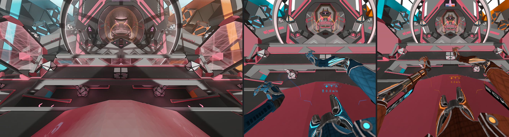
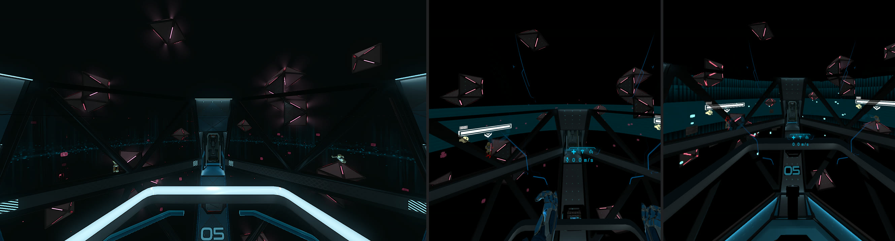
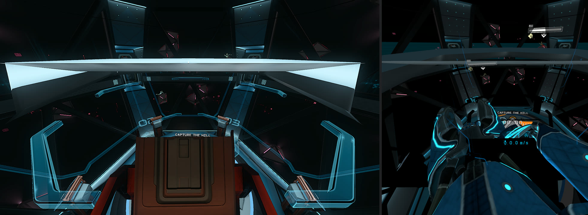
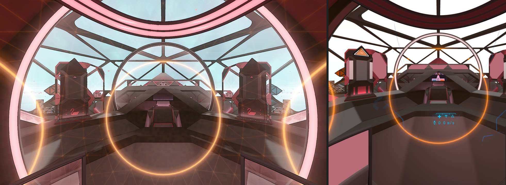
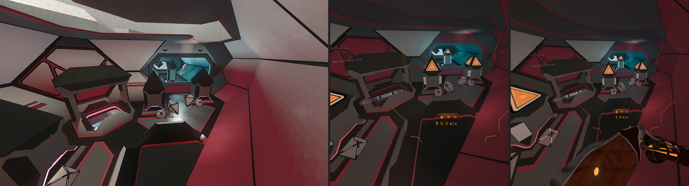
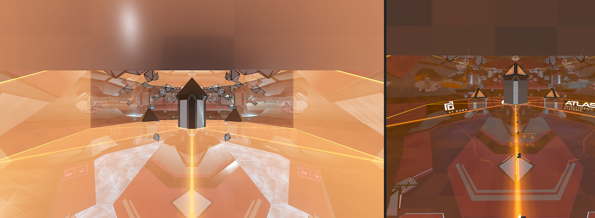
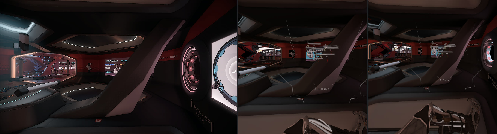
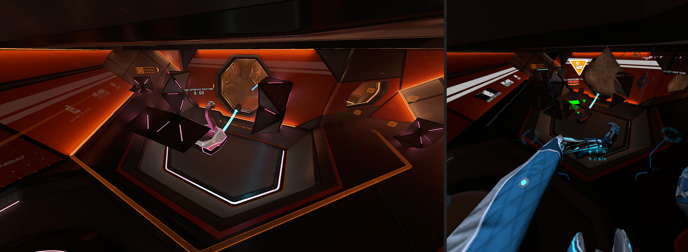
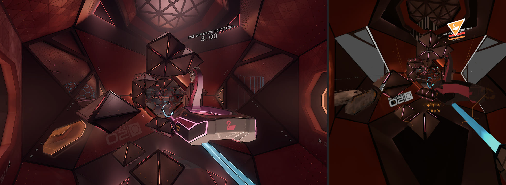

Ducky's fan port of Echo Combat to the standalone Quest 3 and the Steam Frame. This page tracks how far it has come.
Updated 2026-10-07 07:52. Fan project. Not affiliated with or endorsed by Ready At Dawn or Meta. Echo VR and Echo Combat belong to their owners. No game files or builds are shared here.
done = seen working on the headset, partly = partly working, to do = not yet, on hold = paused by choice.
All four combat maps and the combat lobby wing load on the Quest 3. The look is getting closer to PC; some surfaces, glass and screens still differ. The newest build rebuilds Gauss's map script; not yet play-tested.
A round now starts on its own in Practice AI and Find Combat, and in private matches once a team readies up. The exit into the map opened in a private Combustion match; in Dyson the spawn shield still blocks it. The newest build fixes the match clocks (countdown and game timer), makes the spawn shields see-through as on PC, and rebuilds capture point scoring and the payload rules; none of this has been play-tested yet.
Game-logic pieces rebuilt for Quest: 6 of 6 (6 reviewed).
All eight guns are rebuilt and fire on the Quest. Holding the magnum or the rocket launcher for about ten seconds could crash the game; a fix attempt is being tested and a related crash remains. The newest build also has rebuilt bullets, not yet play-tested. Hits and damage are being worked on; bots don't shoot back yet.
Game-logic pieces rebuilt for Quest: 12 of 13 (12 reviewed).
The lobby matchmaking terminal works for public and private combat, and the equipment station swaps guns. The match-rules screen in the drop ship still shows blank buttons, and some labels read 'Text'. The newest build has fixes for the button labels and terminal text, gives the holographic buttons their PC colours, and brings back the combat wing's screens, rebuilt after a fault; all of it waits for the next play test.
Game-logic pieces rebuilt for Quest: 8 of 8 (8 reviewed).
The orb on the drop ship's map table shows up and grabbing it launches you, as on PC. It doesn't return to its stand yet.
Game-logic pieces rebuilt for Quest: 3 of 3 (3 reviewed).
In a private Combustion match the orb took Ducky through a launch tube into the arena for the first time. The tube itself isn't drawn yet and its launch button isn't hooked up.
Game-logic pieces rebuilt for Quest: 2 of 3 (2 reviewed).
The match HUD (objective, score, timer frame) shows. The scoreboard still has placeholder rows, and there's no kill feed yet. The newest build rebuilds the scoreboard, the match clock display and the capture point display; they haven't been play-tested yet.
Game-logic pieces rebuilt for Quest: 4 of 11 (4 reviewed).
Map ambience and hit sounds play. Gun sounds are switched off until their sound links are rebuilt. The newest build adds the music for Dyson and Combustion and the capture point music; not yet play-tested.
Game-logic pieces rebuilt for Quest: 3 of 9 (3 reviewed).
The Quest's renderer has no particle system, so muzzle flashes, tracers and explosions are on hold for now. The full-screen yellow flashes are fixed. The newest build adds a few effects that don't need particles (the capture win glow, Combustion's and Fission's map effects); not yet play-tested.
Game-logic pieces rebuilt for Quest: 1 of 11 (1 reviewed).
Hands face the right way on both headsets. Grabbing near some objects still stretches the arm across the room.
Maps render smoothly when idle; frame rate during a full fight isn't measured yet because fights don't fully run.
The same builds run on the Steam Frame: all maps load at its full 72 Hz and Practice AI bots move. It follows the Quest's progress.
Echo Combat's game logic (guns, bullets, the match flow, terminals, the orb, the HUD) lives in about 100 small scripts. Each script is a graph of steps (nodes), compiled to native code. Combat's scripts only ever shipped for the PC's x86-64 processors.
The Quest version of Echo VR has the same engine, but none of these combat scripts. Until a script is rebuilt, the Quest runs an empty placeholder in its place, so the map loads but nothing in it works.
Each script is rebuilt for the Quest's ARM64 processor from the PC version: its graph is recovered, every step's code is translated, and it is linked against the code the Quest engine already has. Some steps use node types the Quest engine never shipped scripts for; those are wired straight to the engine.
Every rebuilt script passes automatic checks, then a separate review, then a test on the headset before it goes into a play build. In the table, 'real' counts the steps that do their actual job on the Quest; the rest still do nothing.
| Area | Scripts | Rebuilt | Reviewed | Steps real | Steps |
|---|---|---|---|---|---|
| Maps | 6 | 1 | 1 | 198 / 511 39% | |
| Match flow and round start | 9 | 6 | 6 | 1092 / 1410 77% | |
| Guns | 27 | 13 | 13 | 3938 / 5363 73% | |
| Terminals and text | 14 | 11 | 11 | 1016 / 1275 80% | |
| Orb and spawn | 4 | 3 | 3 | 276 / 452 61% | |
| Launch tubes | 2 | 1 | 1 | 168 / 204 82% | |
| HUD and scoreboard | 18 | 5 | 4 | 530 / 1939 27% | |
| Audio | 8 | 2 | 2 | 22 / 438 5% | |
| Visual effects | 12 | 1 | 1 | 23 / 1476 2% |
Short ID, what it does (where known), and how much of it runs on the Quest. Placeholders do nothing yet.
| ID | What | Area | Status | Steps real | Reviewed |
|---|---|---|---|---|---|
| e9a57ec0 | Gauss map script (loads its parts) | Maps | rebuilt | 198 / 252 79% | yes |
| 03f14657 | logic | Maps | placeholder | 0 / 43 0% | - |
| 3af8a0b8 | level loader | Maps | placeholder | 0 / 4 0% | - |
| 7c461983 | level combustion | Maps | placeholder | 0 / 30 0% | - |
| e9a57ec3 | level dyson | Maps | placeholder | 0 / 30 0% | - |
| ec45140b | level fission | Maps | placeholder | 0 / 152 0% | - |
| 45e8df51 | Payload match rules | Match flow and round start | rebuilt | 246 / 265 93% | yes |
| 6fa8cc9c | Match flow (pre-match, round start, main loop) | Match flow and round start | rebuilt | 267 / 329 81% | yes |
| adf5c8a9 #1 | Payload cart rules | Match flow and round start | rebuilt | 211 / 246 86% | yes |
| b7d10bcf | Capture point rules | Match flow and round start | rebuilt | 246 / 254 97% | yes |
| cdfb3188 | Capture point zones (claiming and capture progress) | Match flow and round start | rebuilt | 80 / 103 78% | yes |
| ee180570 | Spawn shields (the doors into the map) | Match flow and round start | rebuilt | 42 / 47 89% | yes |
| 92c0ff5a | Checkpoint marker (likely) | Match flow and round start | placeholder | 0 / 5 0% | - |
| cc091b46 | map objective | Match flow and round start | placeholder | 0 / 154 0% | - |
| e6ae32d4 | Payload map marker (likely) | Match flow and round start | placeholder | 0 / 7 0% | - |
| 31791321 | Loadout manager | Guns | rebuilt | 28 / 34 82% | yes |
| 54cd6d57 | Bullet | Guns | rebuilt | 52 / 64 81% | yes |
| 61f2da3c | Bullet | Guns | rebuilt | 52 / 64 81% | yes |
| 6dae6194 | Gun: magnum | Guns | rebuilt | 450 / 495 91% | yes |
| 6dae7e9a | Gun: rocket launcher | Guns | rebuilt | 445 / 483 92% | yes |
| 9ef94a60 | Gun: SMG | Guns | rebuilt | 447 / 496 90% | yes |
| a9db8988 | Gun: scout | Guns | rebuilt | 541 / 599 90% | yes |
| a9db8989 | Gun: rifle | Guns | rebuilt | 466 / 517 90% | yes |
| a9db8998 | Gun: chain gun | Guns | rebuilt | 450 / 498 90% | yes |
| afd4f843 | Bullet | Guns | rebuilt | 52 / 64 81% | yes |
| afd4f852 | Bullet | Guns | rebuilt | 52 / 64 81% | yes |
| cff4557b | Gun: assault rifle | Guns | rebuilt | 446 / 495 90% | yes |
| cff74a69 | Gun: blaster | Guns | rebuilt | 457 / 507 90% | yes |
| 190ed14f #1 | Grenade: detonator | Guns | placeholder | 0 / 34 0% | - |
| 190ed14f #2 | Grenade: shared core | Guns | placeholder | 0 / 86 0% | - |
| 190ed14f #3 | Grenade: stun | Guns | placeholder | 0 / 54 0% | - |
| 221a0a3a | Auto-target | Guns | placeholder | 0 / 69 0% | - |
| 3a678375 | weapon or ordnance | Guns | placeholder | 0 / 69 0% | - |
| 9398a165 | weapon or ordnance | Guns | placeholder | 0 / 55 0% | - |
| 97d0806e #1 | grenade dot | Guns | placeholder | 0 / 200 0% | - |
| 97d0806e #2 | Grenade: arc mine | Guns | placeholder | 0 / 133 0% | - |
| 99096f90 | Bullet | Guns | placeholder | 0 / 38 0% | - |
| 9909709e | Rocket explosion | Guns | placeholder | 0 / 18 0% | - |
| ac4e9374 | Barrier shield | Guns | placeholder | 0 / 27 0% | - |
| afd4f853 | Bullet | Guns | placeholder | 0 / 1 0% | - |
| cad33e1b | Grenade: burst | Guns | placeholder | 0 / 32 0% | - |
| fb4b399d | weapon or ordnance | Guns | placeholder | 0 / 167 0% | - |
| 495b7362 | Combat wing screens, second part (likely) | Terminals and text | rebuilt | 50 / 64 78% | yes |
| 53da8033 | Combat wing screens | Terminals and text | rebuilt | 67 / 84 80% | yes |
| 69503a23 | Team select | Terminals and text | rebuilt | 46 / 54 85% | yes |
| 85ff96ad | Terminal buttons | Terminals and text | rebuilt | 197 / 207 95% | yes |
| b6690eae | Equipment station (frame) | Terminals and text | rebuilt | 24 / 24 100% | yes |
| bcc40b4c | Terminal buttons | Terminals and text | rebuilt | 32 / 32 100% | yes |
| d15781bb | Team select | Terminals and text | rebuilt | 14 / 21 67% | yes |
| d4653fc2 | Match-rules (READY) screen | Terminals and text | rebuilt | 302 / 302 100% | yes |
| d56c95e9 | Terminal buttons | Terminals and text | rebuilt | 189 / 207 91% | yes |
| e0fdfda9 | Equipment station | Terminals and text | rebuilt | 94 / 95 99% | yes |
| eabd80e0 | Wing attack-data screen | Terminals and text | rebuilt | 1 / 2 50% | yes |
| 6f6afc66 | lobby or terminal | Terminals and text | placeholder | 0 / 145 0% | - |
| d61ee2a3 | lobby or terminal | Terminals and text | placeholder | 0 / 28 0% | - |
| ebcd37a7 | Fission event button (unconfirmed) | Terminals and text | placeholder | 0 / 10 0% | - |
| 4ddac101 | Spawn | Orb and spawn | rebuilt | 60 / 79 76% | yes |
| 885ec987 | PRESS READY pad | Orb and spawn | rebuilt | 21 / 29 72% | yes |
| e5733295 | Orb and spawn exit | Orb and spawn | rebuilt | 195 / 317 62% | yes |
| 3d03502d | spawn | Orb and spawn | placeholder | 0 / 27 0% | - |
| e917a138 | Launch tubes | Launch tubes | rebuilt | 168 / 172 98% | yes |
| 039b5a24 | Wing launch-tube lights | Launch tubes | placeholder | 0 / 32 0% | - |
| 0f8e15af | Scoreboard board | HUD and scoreboard | rebuilt | 106 / 137 77% | yes |
| 19b82cf8 | Combat markers | HUD and scoreboard | rebuilt | 145 / 145 100% | - |
| 29724c5a | HUD element | HUD and scoreboard | rebuilt | 40 / 56 71% | yes |
| b286e82b | Capture point display | HUD and scoreboard | rebuilt | 125 / 150 83% | yes |
| db94b293 | HUD element | HUD and scoreboard | rebuilt | 114 / 135 84% | yes |
| 027e0002 | gamemode payload progress marker | HUD and scoreboard | placeholder | 0 / 67 0% | - |
| 10a27372 | HUD element | HUD and scoreboard | placeholder | 0 / 125 0% | - |
| 1801bc5b | spectator view | HUD and scoreboard | placeholder | 0 / 245 0% | - |
| 253eb047 | Spectator match HUD (scores, clock, objective) | HUD and scoreboard | placeholder | 0 / 154 0% | - |
| 2fc9bd81 | Spectator loadout panel | HUD and scoreboard | placeholder | 0 / 141 0% | - |
| 4e083825 | HUD element | HUD and scoreboard | placeholder | 0 / 36 0% | - |
| 6c270d3b | HUD element | HUD and scoreboard | placeholder | 0 / 97 0% | - |
| 8cad334a | banner | HUD and scoreboard | placeholder | 0 / 163 0% | - |
| 92421ef7 | HUD element | HUD and scoreboard | placeholder | 0 / 42 0% | - |
| d54ba841 | HUD element | HUD and scoreboard | placeholder | 0 / 50 0% | - |
| d7c272ba | spectator view | HUD and scoreboard | placeholder | 0 / 54 0% | - |
| d7c76b8b | spectator minimap | HUD and scoreboard | placeholder | 0 / 99 0% | - |
| d9593515 | Kill feed | HUD and scoreboard | placeholder | 0 / 43 0% | - |
| 1348b672 | Music for Dyson and Combustion | Audio | rebuilt | 22 / 22 100% | yes |
| dd3c7a5c | Scoreboard sounds (likely) | Audio | rebuilt | - | yes |
| 2d08ef44 | audio or music | Audio | placeholder | 0 / 21 0% | - |
| 49ccf7be | audio or music | Audio | placeholder | 0 / 14 0% | - |
| 526ae906 | audio or music | Audio | placeholder | 0 / 232 0% | - |
| 793ea474 | music payload | Audio | placeholder | 0 / 74 0% | - |
| 7c10e713 | audio or music | Audio | placeholder | 0 / 60 0% | - |
| 8b654802 | audio or music | Audio | placeholder | 0 / 15 0% | - |
| 980d8e1b | Combustion map effects (likely) | Visual effects | rebuilt | 23 / 23 100% | yes |
| 1f7867ac | effect | Visual effects | placeholder | 0 / 66 0% | - |
| 4f1b2a7e | progression fx | Visual effects | placeholder | 0 / 594 0% | - |
| 546ab1df | Dyson win glow | Visual effects | placeholder | 0 / 16 0% | - |
| 7d36dd07 | effect | Visual effects | placeholder | 0 / 35 0% | - |
| 8a2739f7 | effect | Visual effects | placeholder | 0 / 24 0% | - |
| 96b14a7d | effect | Visual effects | placeholder | 0 / 76 0% | - |
| ac999400 | effect | Visual effects | placeholder | 0 / 17 0% | - |
| adf5c8a9 #2 | effect | Visual effects | placeholder | 0 / 296 0% | - |
| d33ecb0e | warroom fx | Visual effects | placeholder | 0 / 194 0% | - |
| d6e346e2 | effect | Visual effects | placeholder | 0 / 83 0% | - |
| db83d326 | effect | Visual effects | placeholder | 0 / 52 0% | - |
Short clips from Ducky's own play tests on a Quest 3 (recorded from one eye).
The same spot in the same map on each device, left to right as labelled. The PC shots are the reference the port is matched against.








